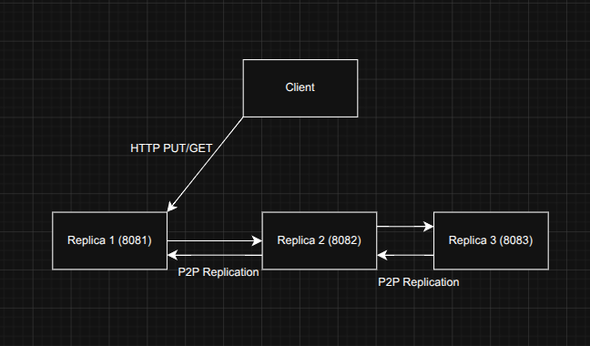
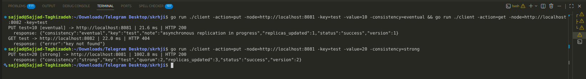
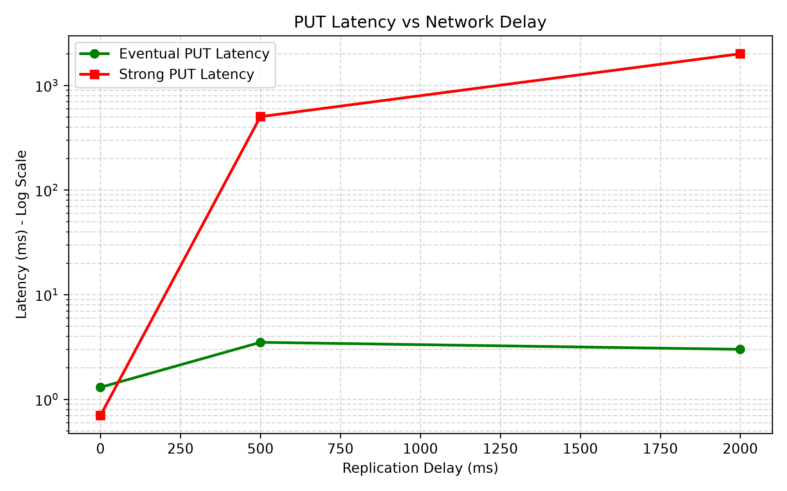
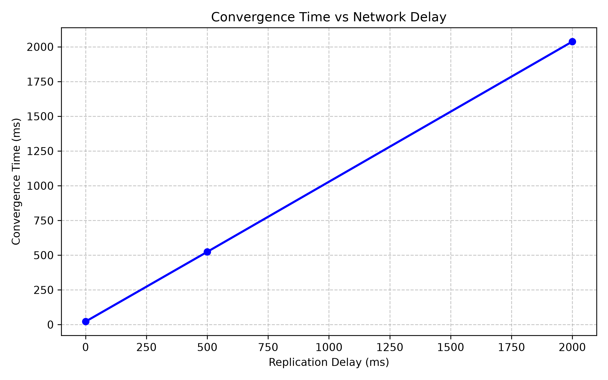

تکثیر داده یعنی نگهداری چند نسخه از یک داده روی گرههای مختلف. مهمترین دلایل آن عبارتاند از:
هرچند هر دو از یک مکانیزم (نگهداری چند نسخه) استفاده میکنند، هدف و طراحی آنها متفاوت است:
در عمل این دو هدف میتوانند همپوشانی داشته باشند؛ سیستمهای واقعی اغلب هر دو را همزمان دنبال میکنند.
وقتی چند نسخه از یک داده وجود دارد، هر بهروزرسانی باید به همهی نسخهها برسد. در بازهی زمانی میان اعمالِ تغییر روی نسخهی اول و رسیدن آن به بقیه، نسخهها ناسازگار هستند و خواندن از نسخههای مختلف ممکن است مقادیر متفاوت یا قدیمی (stale) برگرداند. حفظ سازگاری کامل و آنی نیازمند هماهنگی همزمان میان نسخههاست که تاخیر را افزایش و دسترسپذیری را کاهش میدهد. این همان تنش بنیادین میان سازگاری از یک سو و کارایی/دسترسپذیری از سوی دیگر است.
هر دو مدل در این پروژه پیادهسازی و در بخش چهارم بهصورت عملی مقایسه شدهاند.
این یک تضمین مشتریمحور (Client-Centric) است: هر کلاینت همواره اثر نوشتنهای قبلیِ خودش را در خواندنهای بعدی میبیند، حتی اگر این تغییر هنوز برای سایر کلاینتها قابلمشاهده نباشد. مثال: کاربری که پروفایلش را ویرایش میکند باید بلافاصله نسخهی ویرایششده را ببیند، نه نسخهی قدیمی را. راههای پیادهسازی: هدایت خواندنهای کلاینت به همان نسخهای که روی آن نوشته است، یا نگهداری شناسه/نسخهی آخرین نوشتهی کلاینت و خواندن از نسخهای که دستکم آن نسخه را دارد. در پیادهسازی ما، اگر کلاینت پس از یک نوشتن از همان replica بخواند، این تضمین برقرار است.
این نیز یک تضمین مشتریمحور است: اگر یک کلاینت یکبار مقداری را خواند، خواندنهای بعدیِ او هرگز مقداری قدیمیتر از آن را نمیبینند؛ یعنی «زمان به عقب برنمیگردد». مثال: اگر کاربر پیامی را در صندوق ورودی دید، با تازهسازی صفحه نباید آن پیام ناپدید شود. این تضمین معمولاً با مطمئنشدن از اینکه خواندنهای بعدی از نسخهای انجام میشوند که دستکم بهاندازهی خواندن قبلی بهروز است، برآورده میشود.
بر اساس قضیهی CAP، یک سیستم توزیعشده در حضور بخشبندی شبکه (Partition) نمیتواند همزمان سازگاری (C) و دسترسپذیری (A) کامل را تضمین کند و باید یکی را فدای دیگری کند. استدلال: اگر شبکه بخشبندی شود و سیستم بخواهد به همهی درخواستها پاسخ دهد (A)، نمیتواند تضمین کند همهی نسخهها جدیدترین مقدار را دارند (نقض C)؛ و اگر بخواهد C را حفظ کند، باید در زمان بخشبندی به برخی درخواستها پاسخ ندهد یا خطا برگرداند (نقض A). چون در سیستمهای توزیعشده شبکه قابلاعتماد نیست و بخشبندی اجتنابناپذیر است، عملاً انتخاب میان CP و AP است.
تحلیل Trade-off: سازگاری قویتر ⟵ تاخیر بیشتر و دسترسپذیری کمتر هنگام خطا؛ دسترسپذیری/کاراییِ بیشتر ⟵ سازگاری ضعیفتر و احتمال خواندنهای قدیمی. انتخاب درست به نیاز کاربرد بستگی دارد (برای مثال تراکنش بانکی به سمت سازگاری، و شمارندهی لایک به سمت دسترسپذیری متمایل است).
سیستم بهصورت کلاینت–سرور و با سه replicaی کاملاً مستقل پیادهسازی شده است. هر replica یک پراسس جداگانه (یک سرویس HTTP) است که دادههای خود را بهصورت محلی در یک map در حافظه نگه میدارد و دسترسی همزمان به آن با یک قفل sync.RWMutex محافظت میشود. ارتباط میان کلاینت و replicaها و نیز میان خودِ replicaها از طریق شبکه و با پروتکل HTTP و بدنهی JSON انجام میشود. زبان پیادهسازی Go است.

برای هر کلید، یک مقدارِ نسخهدار با ساختار پیشنهادی صورت تمرین نگهداری میشود:
{ "key": "x", "value": "10", "version": 3, "updated_by": "replica1" }
POST /put — نوشتن از سوی کلاینت؛ بدنه شامل key، value و consistency (برابر eventual یا strong).GET /get?key=...&consistency=... — خواندن مقدار. در حالت eventual مستقیماً از نسخهی محلی خوانده میشود. اما در حالت strong از مکانیزم هماهنگشدهی Read Quorum بهره میبرد.POST /internal/replicate — درگاه داخلی برای دریافت و اعمالِ مقداری که یک replicaی دیگر منتشر کرده است.
در عملیات PUT، مقدار ابتدا بهصورت محلی اعمال و نسخهی کلید یک واحد افزایش مییابد و updated_by برابر شناسهی همان replica قرار میگیرد؛ سپس بسته به مدل سازگاری، تکثیر انجام میشود. در عملیات GET وابسته به پارامتر سازگاری، سیستم تصمیم به استفاده از حافظه محلی یا پرسوجو از اکثریت همتایان میگیرد. تکثیر با ارسال یک درخواست POST به درگاه /internal/replicate هر همتا انجام میگیرد و برای شبیهسازی تاخیر شبکه، یک تاخیر مصنوعی قابلتنظیم (پرچم -delay) پیش از ارسالِ هر پیام تکثیر اعمال میشود.
PUT روی replicaی دریافتکننده اعمال و بلافاصله موفق اعلام میشود؛ آنگاه بهصورت غیرهمزمان (در قالب goroutine) به همتایان منتشر میگردد. بنابراین ممکن است بلافاصله پس از نوشتن، خواندن از replicaی دیگر مقدار قدیمی برگرداند، اما پس از مدتی همهی نسخهها همگرا میشوند.
PUT فقط زمانی موفق محسوب میشود که اکثریتِ replicaها (شاملِ خودِ گره) مقدار را تایید کنند. اندازهی اکثریت بهصورت پویا برابر (N/2)+1 محاسبه میشود که برای سه replica برابر ۲ است. اگر اکثریت در دسترس نباشد، نوشتن با خطای HTTP 500 شکست میخورد. تکثیر در این مدل همزمان (synchronous) است و کلاینت تا تاییدِ اکثریت منتظر میماند. همچنین برای عملیات خواندن (GET) در این مدل، مکانیزم Read Quorum پیادهسازی شده است تا همیشه سیستم جدیدترین نسخه را با پرسش از اکثریت به کلاینت برگرداند و از بازگشت مقادیر ناسازگار (Stale Read) جلوگیری شود.
ابتدا برنامهها ساخته میشوند (نیازمند Go 1.21+):
go build -o bin/replica.exe ./replica go build -o bin/client.exe ./client
سپس هر سه replica (هر کدام در یک ترمینال جداگانه و بهعنوان یک پراسس مستقل) اجرا میشوند. توپولوژی از فایلهای config خوانده میشود:
go run ./replica -config configs/replica1.json # replica1 on :8081 go run ./replica -config configs/replica2.json # replica2 on :8082 go run ./replica -config configs/replica3.json # replica3 on :8083 # افزودن -delay=<ms> برای شبیهسازی تاخیر شبکه
اجرای کلاینت برای نوشتن و خواندن:
go run ./client -action=put -node=http://localhost:8081 -key=x -value=10 -consistency=strong go run ./client -action=get -node=http://localhost:8082 -key=x
نمونهی واقعیِ یک جلسهی کاری (خروجی واقعیِ برنامه)، که تفاوت نوشتن strong (بلافاصله سازگار) و eventual (ناسازگاری موقت تا همگرایی) را نشان میدهد:

برای هر کلید یک شمارهی version نگهداری میشود. هر بار که مقدار یک کلید تغییر میکند، نسخهی آن یک واحد افزایش مییابد و شناسهی نویسنده در updated_by ثبت میشود. این فراداده مبنای تشخیص «جدیدتر بودن» یک مقدار و حل تعارض است.
هنگام دریافت یک مقدار از همتا (در /internal/replicate)، قانون پذیرش به این صورت است:
updated_by بزرگتری (به ترتیب الفبایی) دارد برنده میشود.هر چهار سناریوی خواستهشده اجرا و خروجیهای واقعیِ آنها در پوشهی results/ ذخیره شده است. خلاصهی نتایج:
برای آنکه پنجرهی ناسازگاری (که روی localhost زیرِ یک میلیثانیه است) قابلمشاهده شود، تاخیر تکثیر روی 1000ms تنظیم شد. مقدار x=10 با مدل eventual روی replica1 نوشته شد و بلافاصله از replica2 خوانده شد:
HTTP 404 (key not found) ⟵ یک خواندن stale (تغییر هنوز نرسیده بود).10 را برگرداند.چرا مقدار تغییر کرد؟ چون نوشتنِ eventual بلافاصله بازمیگردد و تکثیر را غیرهمزمان زمانبندی میکند؛ تا پیش از رسیدن پیام تکثیر، replica2 مقدار را نداشت و پس از آن همگرا شد.
حالت الف) یک replica خاموش (replica3): اکثریت (۲ از ۳) همچنان در دسترس است.
حالت ب) دو replica خاموش (replica2 و replica3): اکثریت از دست رفته است.
تقریباً همزمان، روی دو replicaی مختلف برای کلید k دو مقدار متفاوت نوشته شد: replica1 ← k=APPLE و replica2 ← k=BANANA (هر دو نسخهی ۱). بلافاصله پس از نوشتن (پیش از تکثیر، با تاخیر 500ms):
replica1=APPLE(v1) replica2=BANANA(v1) replica3=<none> ← دو replica ناسازگارند
پس از تبادل پیامهای تکثیر، همهی نسخهها پس از حدود 522ms به مقدار BANANA همگرا شدند. دلیل: هر دو نوشته نسخهی ۱ دارند، پس tie-break (شناسهی بزرگتر) برنده را replica2 انتخاب میکند. شواهد از log واقعیِ replicaها:
replica1: [REPLICATE] recv key=k v1 from replica2 -> APPLIED replica2: [REPLICATE] recv key=k v1 from replica1 -> rejected (kept v1 by replica2)
نتیجه روی همهی گرهها قطعی و یکسان است و هیچ گرهای در حالت واگرا باقی نمیماند.
سیستم با سه مقدار تاخیر تکثیر (0، 500، 2000 میلیثانیه) اجرا شد و برای هر کدام تاخیر نوشتن، زمان همگرایی و وقوع خواندن stale اندازهگیری شد:
| تاخیر تکثیر | تاخیر PUT (Eventual) | تاخیر PUT (Strong) | زمان همگرایی | خواندن stale توسط کلاینت؟ |
|---|---|---|---|---|
| 0 ms | 1.3 ms | 0.7 ms | 21.8 ms | بله (تا همگرایی) |
| 500 ms | 3.5 ms | 502.3 ms | 523.7 ms | بله (تا همگرایی) |
| 2000 ms | 3.0 ms | 2002.5 ms | 2037.3 ms | بله (تا همگرایی) |
پاسخ به پرسشهای این سناریو: (۱) زمان همگرایی تقریباً برابر با مقدار تاخیر تکثیر است. (۲) بله، در این بازه کلاینتی که از replicaی دیگر میخواند، مقدار قدیمی میبیند (زیرِ eventual). (۳) تفاوت eventual و strong: تاخیرِ نوشتنِ eventual مستقل از تاخیر شبکه و کم میماند، اما تاخیرِ نوشتنِ strong با تاخیر شبکه رشد میکند چون باید منتظر تاییدِ اکثریت بماند.
جدول زیر متریکهای خواستهشده در صورت تمرین را برای سناریوهای مختلف، بر پایهی اندازهگیریِ واقعی، گرد میآورد (زمانها بر حسب میلیثانیه):
| سناریو | مدل | تاخیر PUT | تاخیر GET | زمان همگرایی | تعداد replica بهروز شده | خواندن stale |
|---|---|---|---|---|---|---|
| ۱ (delay=1000) | Eventual | 3.5 | 2.3 | ~1026 | ۱ ← سپس ۳ | ۱ |
| ۲-الف (۱ خاموش) | Eventual | 0.7 | ~2 | — | ۲ | ۰ |
| ۲-الف (۱ خاموش) | Strong | 11.1 | ~2 | فوری | ۲ | ۰ |
| ۲-ب (۲ خاموش) | Eventual | ~0.0 | ~2 | فقط محلی | ۱ | — |
| ۲-ب (۲ خاموش) | Strong | 0.8 (شکست) | — | — | ۱ (ناموفق) | — |
| ۳ (delay=500) | Eventual | ~1 | ~2 | ~522 | ۳ (LWW→replica2) | تعارض |
| ۴ @0ms | Eventual / Strong | 1.3 / 0.7 | ~2 | 21.8 | ۳ | ۱ |
| ۴ @500ms | Eventual / Strong | 3.5 / 502.3 | ~2 | 523.7 | ۳ | ۱ |
| ۴ @2000ms | Eventual / Strong | 3.0 / 2002.5 | ~2 | 2037.3 | ۳ | ۱ |
تعریف متریکها: «تاخیر PUT/GET» مدت زمان از ارسال درخواست تا دریافت پاسخ در کلاینت است. «زمان همگرایی» مدت زمانی است تا همهی replicaهای فعال مقدار جدید را گزارش کنند. «تعداد replica بهروز شده» تعداد نسخههایی است که پس از یک PUT مقدار جدید را دارند. «خواندن stale» تعداد خواندنهایی است که در پنجرهی ناسازگاری مقدار قدیمی/غایب برگرداندهاند.


| ویژگی | Eventual Consistency | Strong Consistency |
|---|---|---|
| تاخیر نوشتن | کم و مستقل از تاخیر شبکه | زیاد؛ متناسب با تاخیر شبکه و تاییدِ اکثریت |
| دسترسپذیری هنگام خطا | بالا (تا وقتی یک گره زنده است) | پایین (نیازمند اکثریت) |
| سازگاری خواندن | ممکن است stale باشد | پس از تاییدِ اکثریت، سازگار |
| گرایش CAP | AP | CP |
| کاربرد مناسب | شمارندهها، کش، فید اجتماعی | موجودی، تراکنش، رزرو |
دادههای آزمایش این تحلیل را تایید میکنند: در حالی که تاخیر نوشتنِ eventual با افزایش تاخیر شبکه عملاً ثابت ماند (حدود ۱ تا ۴ میلیثانیه)، تاخیر نوشتنِ strong از ~0.7ms به ~2002ms رسید. در مقابل، eventual این سرعت را با پذیرش پنجرهی ناسازگاری و خواندنهای stale «خریده» است. به بیان دیگر، هیچ مدلی مطلقاً بهتر نیست؛ انتخاب میان «سرعت و دسترسپذیری» و «سازگاری» است.
/internal/replicate مقدار را اعمال میکند ولی آن را دوباره منتشر نمیکند. بنابراین همگرایی به این وابسته است که نویسندهی اصلی به همهی همتایان برسد؛ گرهای که یک بهروزرسانی را از دست بدهد، آن را از گرهی دیگر یاد نمیگیرد (مکانیزم anti-entropy وجود ندارد).در این تمرین یک Replicated Key-Value Store ساده با سه replicaی مستقل و ارتباط شبکهای واقعی پیادهسازی شد و دو مدل سازگاریِ eventual و strong بههمراه نسخهگذاری و حل تعارض Last-Write-Wins بهکار رفت. آزمایشها بهصورت عملی نشان دادند که چگونه تکثیر، دسترسپذیری و تحمل خطا را افزایش میدهد، چرا تکثیر مشکل سازگاری میسازد، و تفاوت رفتاریِ دو مدل سازگاری در خواندنهای stale، تعارض، خرابی گره و زمان همگرایی چگونه است. دادههای اندازهگیریشده، trade-off بنیادینِ میان سازگاری و دسترسپذیری/کارایی (مطابق قضیهی CAP) را بهروشنی تایید میکنند.